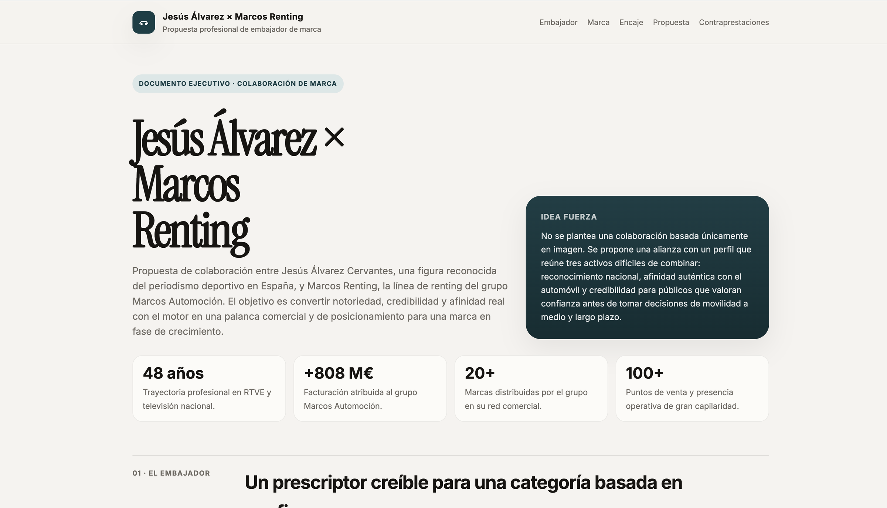
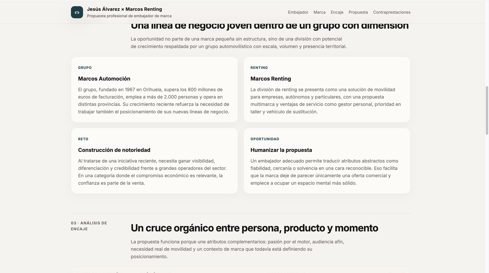
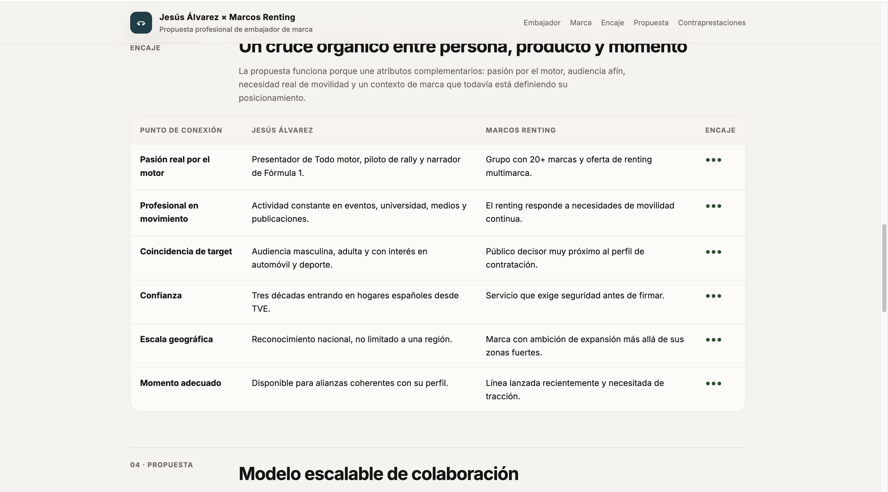
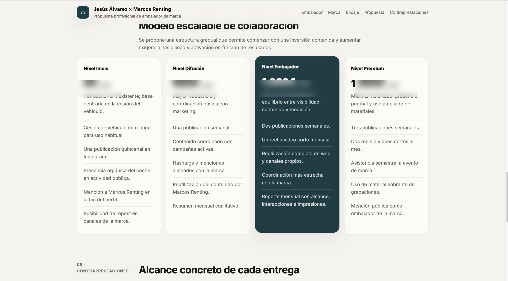
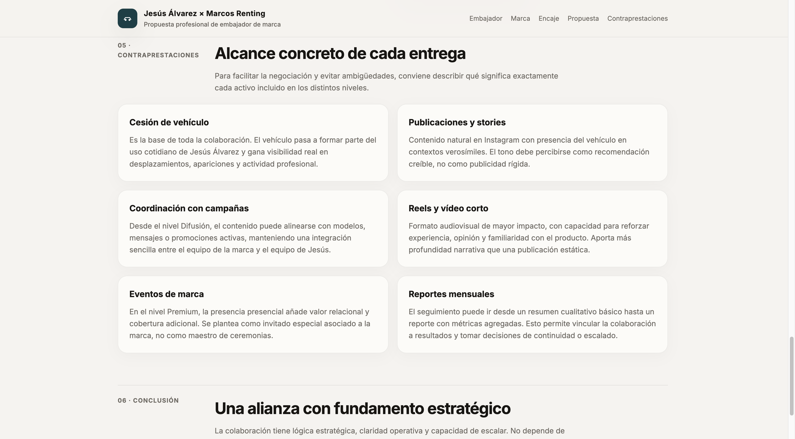

Una figura del periodismo deportivo
como palanca de marca.
Marcos Renting tenía sobre la mesa la oportunidad de incorporar a Jesús Álvarez como embajador. Producimos el documento que convirtió esa intuición en una decisión basada en encaje, audiencias y un modelo económico escalable.
El embajador correcto no se elige por intuición.
Marcos Automoción quería dar tracción a su línea de renting con una figura pública que aportara autoridad y reconocimiento. Jesús Álvarez — 48 años de trayectoria en el periodismo deportivo nacional — encajaba a primera vista. El reto era no quedarse en la intuición.
Las propuestas de embajador suelen presentarse como un acuerdo cerrado: un nombre, una cifra y un calendario. Eso obliga al cliente a decidir en blanco o negro, sin margen para ajustar el grado de compromiso. Necesitábamos un documento que justificara la elección y al mismo tiempo abriera varios caminos económicos.
Análisis del prescriptor, de la marca y seis puntos de encaje.
Construimos la propuesta en cinco bloques, pensados para que cualquier persona del comité de dirección pudiera leerlos y tomar postura sin contexto previo.
- A Análisis del prescriptor. Audiencias de Jesús Álvarez, perfil profesional y solapamiento con el target objetivo de Marcos Renting.
- B Auditoría de marca. Grupo Marcos Automoción y Marcos Renting como línea joven dentro del grupo: reto de notoriedad y oportunidad de humanizar la propuesta.
- C Matriz de encaje en 6 puntos. Pasión real por el motor, profesional en movimiento, coincidencia de target, confianza, escala geográfica y momento adecuado.
- D Modelo escalable de colaboración. Cuatro niveles — Inicio · Difusión · Embajador · Premium — que permiten al cliente entrar por el tramo bajo y subir según resultados.
- E Contraprestaciones detalladas. Alcance concreto por bloque (cesión de vehículo, publicaciones, coordinación con campañas, reels, eventos de marca, reportes mensuales) para evitar ambigüedad antes de firmar.





Una decisión encuadrada, no una apuesta.
Marcos Renting llegó a la mesa de decisión con un marco objetivo en lugar de una intuición. La conversación posterior con el prescriptor pudo arrancar por el tramo bajo del modelo, sin atarse, y con criterios claros para subir de nivel cuando los datos lo justificaran.
escalables
analizados
de decisión
Cómo lo producimos.
Este tipo de propuesta se construye combinando investigación de prescriptor (datos públicos, redes, audiencias declaradas), auditoría de marca cliente y diseño de modelo de colaboración. La velocidad la pone nuestro sistema interno de IA: agentes que estructuran el documento, sintetizan las audiencias y generan el modelo económico bajo supervisión del consultor.
Conversemos veinte minutos.
El documento original es confidencial. Si quieres ver el formato completo o discutir un encaje similar para tu marca, escríbenos directamente.